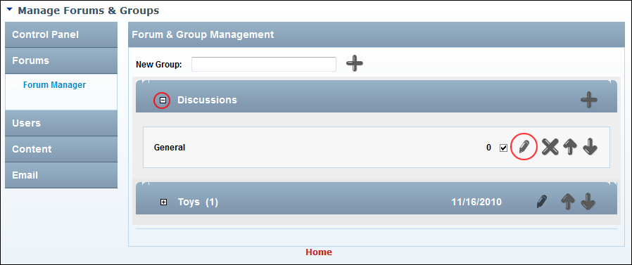

Editing a Forum
How to edit the name or settings of a forum.
- Go to the Forum Administration page. See "Navigating to the Forum Admin Page"
- In the left-hand panel, select Forums > Forum Manager. This displays the Forum and Group Management window.
- Maximize
 the Forum Group associated with the forum to be edited.
the Forum Group associated with the forum to be edited.
- Click the Edit Forum button beside the required forum.
- Edit any general settings (See "Adding a Forum"), forum options (See "Setting Forum Options" and See "Setting Forum Permissions") or forum email settings (See "Setting Forum Email") as required.
-
Click the Update button.

Editing a Forum